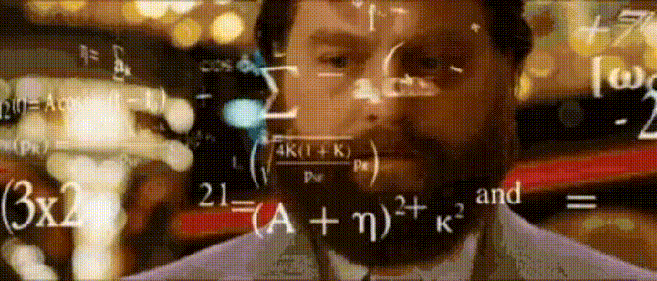

Impulse Projects
A portfolio about art, technology, and pet rainbows
Hello! I’m Andy.
Probably like you, I'm that person always embarking on creative adventures. And “adventures” is really the only way to describe it. When I’m starting a new painting, it feels like I’m rappelling down an Indiana Jones style cave with lines shooting out the wall, colors coalescing into trap doors, and ideas leading to dead ends or bizarre holy grails.
.gif)
My creative practice is all about following my curiosity, imagination, and wonder regardless of where it takes me, and last year, it pulled me towards technology. I’ve been interested in tech since I was a kid and would gut old household radios to admire the wires and circuit boards inside. Destroying circuits was fascinating, but building was only a thought I’d dream about, something better made for left-brainers. That changed when my uncle showed me the Arduino he bought for my little cousin. I got one for myself, figuring that if a ten-year-old could build technology it, so could I. I found some excellent YouTube tutorials for learning electronics from the ground up, and completed my first project in January 2021:

Even though my prepubescent cousin was building cooler things with his Arduino, the child inside me who could only rip circuits was amazed that he had just built one. It was like a baby superpower, and the more I learned, the more I saw its creative possibilities. When I found out how to measure distance with the speed of sound using a supersonic sensor, I realized that data from my hand controls an RGB LED. I finished my first rendition of “Pet Rainbow” July 2021, and as you can tell by my shirtlessness and the adoring look on my face, we had a very close relationship:

I took more McWhorther tutorials and learned Python and OpenCV for tracking body position. Watching the (x,y) coordinates of my fingertips roll across my computer terminal, I wondered if I could use this new and improved data source to fuse my love of light and dance. The idea to max-out my Pet Rainbow has spawned an adventure that enchants and challenges me like no other, and evokes the entire range of human emotions, from weeping-on-my-keyboard levels of burnout to direct-contact-with-god moments of revelation. Here is Pet Rainbow in March 2022:

This is a video frome my webcam which uses open source, motion-capture AI software in python to send hand or body position data to a microcontroller (ESP32). A C++ program analyzes the data, creates wild patterns, and sends it to the light strip. Other features include saving and accurately replaying your lightshows, options for other cool light patterns, control dynamics, color palettes, and data smoothing to reduce glitchiness. I will be doing a performance with it in March 2022. It’s at a talent show, but you gotta start somewhere.
a Python program is sending my hand coordinates to an ESP32 microcontroller running a C++ Arduino program, which translates the data into wild patterns and pushes them to a 150 RGB SK9822 LED strip at lightning speeds. Pet Rainbow and I will be doing our first live performance in March 2022, so we are training hard to pull off some new tricks.
Anyways, the idea from the project came from my love for dancing in my room and wanting to share that magic with people. The project isn’t complete until others participate.
Current features include:
- One hand / two hand / full body data capture
- Recording and replaying light shows for sharing with friends and complimenting the music you were dancing to
- Selections for different light patterns, control dynamics, and color palettes
I’m working on more editing and layer options, so lightshows can be crafted like a music looper would, except the process is controlled with a webcam rather than a petal. I’d also like to turn it into a web and iOS app capable of 1) capturing and streaming data wirelessly and 2) social media features for sharing light shows with your friend’s LED strip. Everyone I know is getting a pet rainbow for Christmas, so my goal is to finish the project by then.
.gif)
It all started with learning how to turn a red LED on and off. If you could see the shape of the Indiana Jones style cave uncovered by my Pet Rainbow project, it would like a tree branching into more trees branching into lightning bolts. Here is a list of my projects and interests since January 2021:
- Projection Mapping and Painting Fusion with Resolume
- Sculpture with lights, motors, and random objects (ask me about my depressed sock puppet idea andyklenz@gmail.com)
- Web design with HTML/CSS/PHP/Bootstrap (I made the website you are on)
- Social media with Ruby on Rails/SQL/AWS (inspiration to build a social media platform comes from the man who writes the blog Tiny Projects. He created an awesome social media website called sNormal
- 3D animation with ThreeJS/Unreal Engine/Blender (the website is going to look sick once I figure out how to add this stuff to it)
- iOS Apps with Swift. Besides building more pet rainbow features, I’d like to build an app called Quote Collector for collecting, sharing, and receiving quotes of inspiration
- Video games with Python/OpenCV
- Data Science with Numpy Pandas/Python (Data science is surprisingly creative, most of pet rainbow is designing and analyzing data structures) 
.gif)
.gif)
.gif)
.gif)
.gif)
Curiosity is my guide, and although I have no clue where it is taking me, the journey has always been rewarding. Besides finishing more cool projects, one of my major hopes for the future is to share projects with other people and create work that is meaningful. The intent of a lot of my work is about creating without a clue…what if I started with a message or intention and followed from there? THE END. Insert statement, type:profound, content: concerning creativity, collaboration, and the underlying unity in the universe.
The missing piece in this adventure has been other people. While my creative journeys are rewarding for myself, I would really like it if they connected me to other people, when sometimes, it feels like it is pulling me apart. If anyone would like to collaborate or talk shop, just hit me up, have opportunities or ideas.
🍄 🔥 🌙